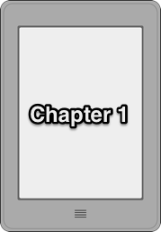
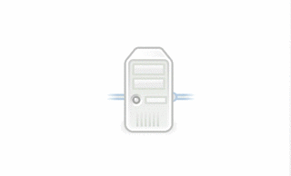
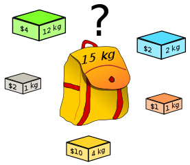

<!doctype html>
<html lang="en">
	<head>
		<meta charset="utf-8">

		<title>CloudSim Plus: A Cloud Computing Simulation Framework Pursuing Software Engineering Principles for Improved Modularity, Extensibility and Correctness</title>

		<meta name="description" content="A Cloud Computing Simulation Framework Pursuing Software Engineering Principles for Improved Modularity, Extensibility and Correctness">
		<meta name="author" content="Manoel C. Silva Filho; Raysa L. Oliveira; Claudio C. Monteiro; Pedro R. M. Inácio; Mário M. Freire">

		<meta name="apple-mobile-web-app-capable" content="yes">
		<meta name="apple-mobile-web-app-status-bar-style" content="black-translucent">

		<meta name="viewport" content="width=device-width, initial-scale=1.0, maximum-scale=1.0, user-scalable=no">

		<link rel="stylesheet" href="css/reveal.css">
		<link rel="stylesheet" href="css/theme/league.css" id="theme"> <!-- blood, league-->

		<!-- Theme used for syntax highlighting of code -->
		<link rel="stylesheet" href="lib/css/zenburn.css">

		<!-- Printing and PDF exports -->
		<script>
			var link = document.createElement( 'link' );
			link.rel = 'stylesheet';
			link.type = 'text/css';
			link.href = window.location.search.match( /print-pdf/gi ) ? 'css/print/pdf.css' : 'css/print/paper.css';
			document.getElementsByTagName( 'head' )[0].appendChild( link );
		</script>

		<!--[if lt IE 9]>
		<script src="lib/js/html5shiv.js"></script>
		<![endif]-->
	</head>

	<body>
		<div class="reveal">
			<!-- Any section element inside of this container is displayed as a slide -->
			<div class="slides">
				<section data-markdown><script type="text/template">
					# CloudSim Plus
					http://cloudsimplus.org
					## A Cloud Computing Simulation Framework Pursuing Software Engineering Principles for Improved Modularity, Extensibility and Correctness
					### [IFIP/IEEE International Symposium on Integrated Network Management, 2017](http://im2017.ieee-im.org)
					#### [Manoel Campos](http://twitter.com/manoelcampos)¹ ²; [Raysa Oliveira](https://twitter.com/raysaloliveira)²; [Claudio Monteiro](https://www.linkedin.com/in/claudio-monteiro-4637411a)¹; [Pedro Inácio](http://www.di.ubi.pt/~inacio)²; [Mário Freire](http://di.ubi.pt/~mario/)²
					<small>
					¹Depto. Informática, [Instituto Federal de Educação do Tocantins](http://www.ifto.edu.br), Brazil<br/>
					²[Instituto de Telecomunicações](http://www.it.pt) and [Depto. Informática](http://di.ubi.pt), [Universidade da Beira Interior](http://www.ubi.pt), Portugal
					<div height="40px">
					###### This presentation is licensed under a [Creative Commons Attribution-ShareAlike 4.0 International License](http://creativecommons.org/licenses/by-sa/4.0/).
					
					</div>
					</small>
				</script></section>

				<section data-markdown><script type="text/template">
					## Agenda
					

					- [CloudSim Plus Introduction](#/2)
					- [Architecture](#/3)
						- [Modules](#/4)
						- [Main Packages](#/5)
					- [Main Exclusive Features](#/6)
					- [Conclusions and Future Work](#/17)
				</script></section>

				<section data-markdown data-separator-notes="^# Notes"><script type="text/template">
					## CloudSim Plus Introduction
					##### Java 8 independent CloudSim fork for Cloud Computing simulation
					

					- Highly extensible, completely redesigned and refactored.
					- Full-featured: more than 20 [exclusive features](http://cloudsimplus.org/#exclusive-features).
					- [Design Patterns](https://en.wikipedia.org/wiki/Software_design_pattern), [SOLID principles](https://en.wikipedia.org/wiki/SOLID_(object-oriented_design%29), [KISS](https://en.wikipedia.org/wiki/KISS_principle), [DRY](https://pt.wikipedia.org/wiki/Don't_repeat_yourself) and Clean Code practices.
					- Reduces duplication and redundancy. Simplified design ([comparison](http://cloudsimplus.org/CloudSim-and-CloudSimPlus-Comparison.html)).
					- Less 30% code duplication, more 80% test coverage.

					# Notes
					Independent CloudSim fork: Java 8, Cloud Computing simulations, Modern.
					- Intuitive and Easier.
					- Implementation of complex and more realistic scenarios.
					- Stat-of-the-art framework.
					- Easier to maintain.
					- More accuracy and safety for changes.
				</script></section>

				<section data-markdown data-separator-notes="^# Notes"><script type="text/template">
					## Architecture
					
					
					- Maven project available at [Maven Central](http://cloudsimplus.org/maven.html).
					- Simplified module structure, new modules introduced.
					- Totally re-organized and documented packages.
					- New interfaces: increased abstraction, contracts for implementations.

					# Notes
					- New tools to be built on top of it.
					- Easier to undersdant and maintain.
					- An excellent starting point for learning.
					- For Researchers: Increase abstraction and define contract for implementations.
				</script></section>

				<section data-markdown data-separator-notes="^# Notes"><script type="text/template">
					## Modules
					

					- **API**: independent and single-required module for building simulations.
					- **Examples**: exclusive examples, refactored previous ones.
					- **Testbeds**: multiple-run simulations for  scientifically valid data collection. 
					- **Benchmarks**: performance assessment of features such as heuristics.

					# Notes
					Compounded of 4 modules.
					- API: All other modules depend on it. Dark yellow are exclusive to CloudSim Plus.
					- Examples updated. Exclusive examples.
					- Execution of multiple-run simulations using pseudo random number generators.
					- Assessment of heuristics and algorithms for tunning.
				</script></section>

				<section data-markdown data-separator-notes="^# Notes"><script type="text/template">
					## Main Packages
					
					- **Dark yellow**: CloudSim Plus packages with exclusive features.
					- **Light yellow**: new packages to better organize CloudSim classes.
					- **White**: CloudSim existing packages.

					# Notes
					Easier to find a class.
					- Dark Yellow: exclusive.
					- Light Yellow: better organization.
					- White: already existing.
				</script></section>

				<section data-markdown data-separator-notes="^# Notes"><script type="text/template">
					## Main Exclusive Features
					<div style="width: 256px" id="logo" >
						
						
					</div>
					
					1. Vertical and Horizontal VM Scaling;
					2. Parallel execution of simulations;
					3. Dynamic creation of VMs and Cloudlets;
					4. Delay creation of submitted VMs and Cloudlets;
					5. Event Listeners
					6. Strongly Object-oriented Framework; 
					7. Classes and Interfaces for Implementation of [Heuristics](http://en.wikipedia.org/wiki/Heuristic); 
					8. [Implementation of the Linux Completely Fair Scheduler](https://en.wikipedia.org/wiki/Completely_Fair_Scheduler);
					9. Java 8 ([Functional Programming](https://en.wikipedia.org/wiki/Functional_programming), [Lambda](http://www.oracle.com/webfolder/technetwork/tutorials/obe/java/Lambda-QuickStart/index.html), [Streams](http://www.oracle.com/technetwork/articles/java/ma14-java-se-8-streams-2177646.html));
					10. [Functional](https://en.wikipedia.org/wiki/Functional_programming) `DatacenterBroker`;
					
					Many more at [http://cloudsimplus.org](http://cloudsimplus.org/#exclusive-features)

					# Notes
					- Extensive list of features.
					- Time limitation.
					- Official website.
				</script></section>

				<section data-markdown data-separator-notes="^# Notes"><script type="text/template">
					## 1. VM Scaling
					<div id="logo" style="width: 300px">
						<a href="https://commons.wikimedia.org/wiki/File:Gnome-network-server.svg" title="Adapted from Gnome-network-server"></a>
						<a href="https://commons.wikimedia.org/wiki/File:Gnome-network-server.svg" title="Adapted from Gnome-network-server"></a>
					</div>

					- Vertical VM Scaling
						- resize of VM resources to fit workload
						- RAM, CPU, Bandwidth and Storage
					- Horizontal VM Scaling
						- creation and destruction of VMs for load balancing

					# Notes
					Most interesting features. Under and overload, SLA violations.
					- Static or dynamic thresholds. 
					- Load balance. Thresholds. Alternative for Vertical Scaling and VM migration.
				</script></section>

				<section data-markdown data-separator-notes="^# Notes"><script type="text/template">
					## 2. Parallel Execution of Simulations
					

					- Parallel execution of multiple simulation runs
					- Relies on Java 8 Parallel Streams mechanism
					- As simple as calling a single line of code: 

					*simulations.parallelStream().forEach(MySimulation::run);* 

					# Notes
					- Simulations take several minutes. Multiple simulations at the same time.
					- Java 8 Parallel Streams.
					- Single line of code to run.
				</script></section>

				<section data-markdown data-separator-notes="^# Notes"><script type="text/template">
					## 3. Dynamic Creation of VMs and Cloudlets (Apps)
					

					- Enables creating objects after the simulation has started
					- Doesn't require new DatacenterBrokers to be created at runtime
					- Objects just have to be submitted to an existing broker

					# Notes
					Cloud: dynamic environment (requests for VMs and Apps execution).
					- Created dynamically (desired conditions)
					- No new DatacenterBrokers.
					- Just submit to broker.
				</script></section>

				<section data-markdown data-separator-notes="^# Notes"><script type="text/template">
					## 4. Delay creation of submitted VMs and Cloudlets
					

					- Creation of objects at a given time, before starting the simulation
					- Used when the arrival times of objects are known in advance
					- Different way to simulate the dynamic creation of such objects

					# Notes
					- Delay creation before start.
					- When arrivals are known in advance.
					- Different way from previous feature.
				</script></section>

				<section data-markdown data-separator-notes="^# Notes"><script type="text/template">
					## 5. Event Listeners
					

					- Enables monitoring simulation to:
						- collect resource utilization data
						- assess fulfillment of customer SLA 
						- optimize resource allocation to avoid under/overload
						- granular simulation execution feedback
					- Type-safe message passing mechanism. Also used internally.
					- Listeners for events from Hosts, VMs, Cloudlets and more.

					# Notes
					Most general purpose.
					- Monitoring.
					- Used by VM Scaling.
					- Hosts, VMs, Cloudlets and more.
				</script></section>

				<section data-markdown data-separator-notes="^# Notes"><script type="text/template">
					## 6. Strongly Object-oriented Framework

					- Objects are used to create actual relationships, instead of IDs
					- Fluent API, allowing direct chained calls such as `cloudlet.getVm().getHost().getDatacenter()`
					- Uses [Null Object Pattern](https://en.wikipedia.org/wiki/Null_Object_pattern) to avoid NullPointerException.

					# Notes
					Strongly object-oriented.
					- Actual relationships instead of int IDs.
					- Fluent API, Chained calls. Easy to get information.
					- Null Object Pattern.
				</script></section>

				<section data-markdown data-separator-notes="^# Notes"><script type="text/template">
					## 7. Classes/Interfaces for Heuristics
					<a href="https://commons.wikimedia.org/wiki/File:Knapsack.svg" id="logo"></a>

					- Specifies a contract to implement heuristics in some steps:
						- initial solution generation;
						- generation of neighbor solutions;
						- definition of an utility function to be minimized or maximized;
						- and then the solution finding stop criteria.
					- Examples: [Tabu Search](http://en.wikipedia.org/wiki/Tabu_search), [Simulated Annealing](http://en.wikipedia.org/wiki/Simulated_annealing), [Ant Colony Systems](http://en.wikipedia.org/wiki/Ant_colony_optimization_algorithms);
					- Includes a Simulated Annealing heuristic for mapping Cloudlets to VMs.

					# Notes
					- Classes and Interfaces: contract to implement Heuristics in steps.
					- Examples.
					- Mapping Cloudlets to VMs.
				</script></section>

				<section data-markdown data-separator-notes="^# Notes"><script type="text/template">
					## 8. Implementation of the Linux Completely Fair Scheduler
					

					- `CloudletScheduler`: how a Vm schedules the execution of Cloudlets
					- Bad scheduling: starvation, wastage of CPU cycles, SLA violations
					- [Completely Fair Scheduler](https://en.wikipedia.org/wiki/Completely_Fair_Scheduler) reduces these issues ([needs improvements](https://doi.org/10.1145/2901318.2901326) [Lozi et. al. 2016])
					- Considers tasks priorities to define CPU time slices
					- `CloudletSchedulerTimeShared`: [simplistic; ignores task's priority; no actual preemption](https://github.com/manoelcampos/cloudsim-plus/issues/33)
					- [CloudletSchedulerCompletelyFair](https://github.com/manoelcampos/cloudsim-plus/issues/58): more realistic implementation

					# Notes
					Linux Completely Fair Scheduler.
					- Cloudlet Scheduler used by a VM.
					- Bad scheduling consequences.
					- The Completely Fair Scheduler,
					- Task's priority.
					- CloudletSchedulerTimeShared simplistic.
					-  Completely Fair Scheduler: more realistic.
				</script></section>

				<section data-markdown data-separator-notes="^# Notes"><script type="text/template">
					## 10. Functional DatacenterBroker
					<a href="https://en.wikipedia.org/wiki/Functional_programming" id="logo" title="Functional Programming"></a>

					-  Enables changing, in runtime, the policies to select: 
						- a DC to place waiting VMs; 
						- a fallback DC when a previous one doesn't have a suitable Host for a VM; 
						- and a VM to run each Cloudlet. 
					- Allows implementing new policies, without requiring new `DatacenterBroker` classes. 

					More details about issues [here](http://cloudsimplus.org/#exclusive-features-broker).

					# Notes
					Functional Programming and Functional DatacenterBroker: decision making on behalf of customers
					- Runtime behaviour change.
					- New policies without creating new DatacenterBrokers.
				</script></section>

				<!-- END -->
				<section data-markdown><script type="text/template">
					## Conclusions and Future Work

					- It is difficult to replicate a real system in simulation, mainly concerned in modelling the arrival of stochastic events such as workload bursts. 
					- To contribute for valid results, a simulation framework has to:
						- be well-designed and extensively tested;
						- get away from code duplication to avoid code degeneration;
						- and provide classes following software engineering principles. 
					- CloudSim Plus is aligned with all these requirements. 
					- Proposed future work is available at the [issues page](https://github.com/manoelcampos/cloudsim-plus/issues).
				</script></section>

				<section data-markdown><script type="text/template">
					## Acknowledgements

					CloudSim Plus is developed through a partnership among the Systems, Security and Image Communication Lab of [Instituto de Telecomunicações (IT, Portugal)](http://www.it.pt), the [Universidade da Beira Interior (UBI, Portugal)](http://www.ubi.pt) and the 
					[Instituto Federal de Educação Ciência e Tecnologia do Tocantins (IFTO, Brazil)](http://www.ifto.edu.br). 
					It is supported by the Brazilian [CAPES](http://www.capes.gov.br) (Proc. no 13585/13-4) and the Portuguese [FCT](https://www.fct.pt) (under the UID/EEA/50008/2013 Project) agencies.	

					### Official Site & Presentation
					[cloudsimplus.org](http://cloudsimplus.org) <br/>
					[cloudsimplus.org/presentation](http://cloudsimplus.org/presentation)

					<br/>
					<small><a href="https://github.com/hakimel/reveal.js">Presentation powered by reveal.js</a></small>
				</script></section>
			</div>
		</div>

		<script src="lib/js/head.min.js"></script>
		<script src="js/reveal.js"></script>
		<script>
			// More info https://github.com/hakimel/reveal.js#configuration
			Reveal.initialize({
				controls: true,
				progress: true,
				history: true,
				center: true,
				overview: true,
				keyboard: true,
				slideNumber: "c/t",
				touch: true,
				loop: false,
				fragments: true,
				help: true,
				showNotes: false,
				mouseWheel: false,
				hideAddressBar: true, // Hides the address bar on mobile devices
				previewLinks: false, // Opens links in an iframe preview overlay
				viewDistance: 2, // Number of slides away from the current that are visible
				width: "100%", //can be used %
				height: "100%",		
				margin: 0,
				minScale: 1,
				maxScale: 1,

				transition: 'slide', // none/fade/slide/convex/concave/zoom

				// More info https://github.com/hakimel/reveal.js#dependencies
				dependencies: [
					{ src: 'lib/js/classList.js', condition: function() { return !document.body.classList; } },
					{ src: 'plugin/markdown/marked.js', condition: function() { return !!document.querySelector( '[data-markdown]' ); } },
					{ src: 'plugin/markdown/markdown.js', condition: function() { return !!document.querySelector( '[data-markdown]' ); } },
					{ src: 'plugin/highlight/highlight.js', async: true, callback: function() { hljs.initHighlightingOnLoad(); } },
					{ src: 'plugin/zoom-js/zoom.js', async: true },
					{ src: 'plugin/notes/notes.js', async: true }
				]
			});

			Reveal.configure({ pdfMaxPagesPerSlide: 1 });
		</script>
	</body>
</html>
